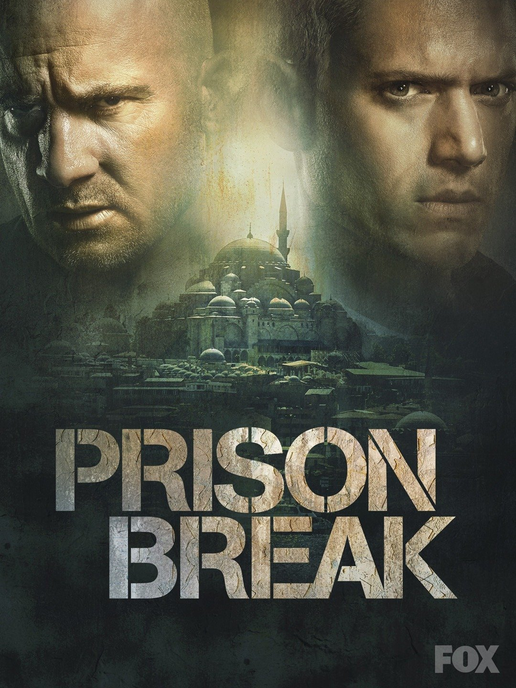

Prison Break
More Information
See this movie on IMDbSummary:
"Prison Break" is a television series that originally aired from 2005 to 2009, with additional seasons released later. The show is a suspenseful drama that follows the intricate and daring escape plan of Michael Scofield, a structural engineer who deliberately gets himself incarcerated in a high-security prison to free his wrongfully convicted brother, Lincoln Burrows.
Lincoln is on death row for allegedly murdering the brother of the Vice President of the United States. Determined to prove his brother's innocence, Michael meticulously orchestrates an elaborate scheme to break Lincoln out of prison.
The series unfolds as Michael befriends other inmates, forms alliances, and uncovers the prison's secrets, all while executing his plan. As the escape unfolds, they encounter obstacles, dangerous enemies, and unexpected twists.
"Prison Break" is known for its intense action, suspenseful plotlines, and intriguing characters. The series received acclaim for its thrilling and engaging storyline, making it a popular and successful show during its original run and earning a dedicated fan base.